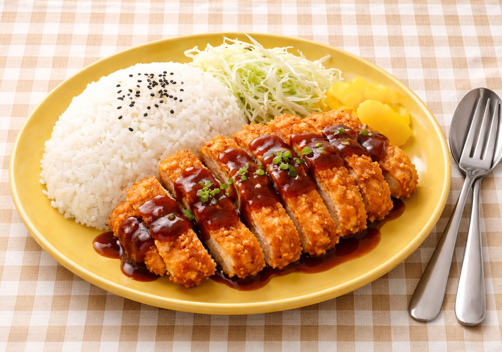
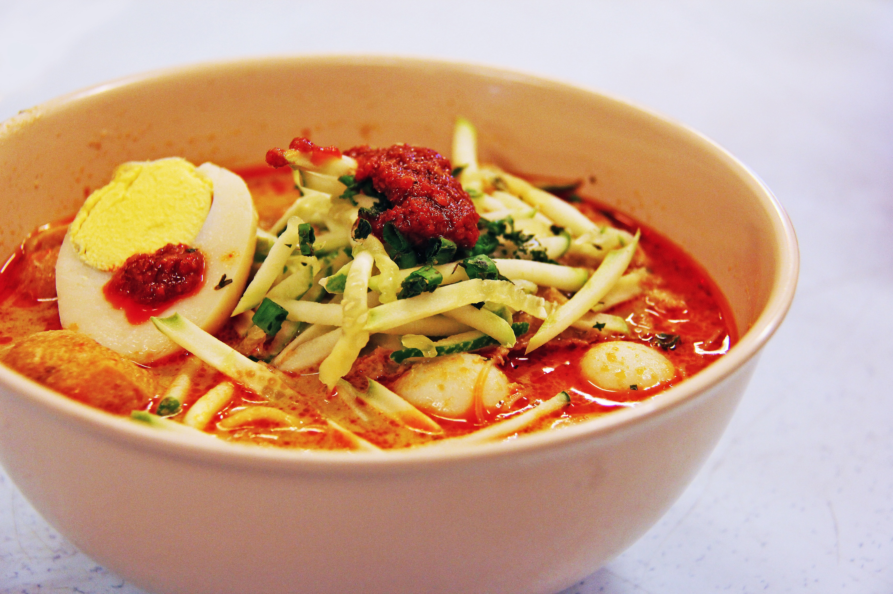
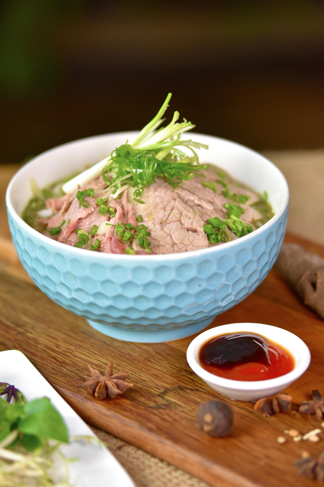

Food is more than just fuel — it’s culture, history, and identity served on a plate,every cuisine tells a story shaped by geography, tradition, and people.This page allow you to exploring the diverse world of food. You’ll find something here to spark your appetite and curiosity.

Tonkatsu is a type of Japanese cutlet made from pork. Slices of pork loin or fillet are coated with panko (bread crumbs) and then deep-fried in oil. Tonkatsu is then sliced into bits and served, commonly with shredded cabbage. It is most commonly eaten with a thick Worcestershire-style sauce called tonkatsu sauce. It is usually served with rice, miso soup and tsukemono and eaten with chopsticks. It may also be served with ponzu and grated daikon instead of tonkatsu sauce.
Tonkatsu is commonly eaten as katsu curry, katsudon, or katsu rice with demi-glace sauce, each pairing the pork cutlet with rice in different ways. The katsu-sando (pork cutlet sandwich), said to have originated at the Isen restaurant in the 1930s, was later made smaller so geisha could eat it neatly without smudging their lipstick.
#Japanese style #savory

Laksa is a spicy, aromatic noodle soup popular across Southeast Asia, especially in Malaysia, Singapore, and Indonesia. It typically features rice noodles in a rich broth that can be either creamy coconut-based (like curry laksa) or sour and tangy with tamarind (like asam laksa). Common toppings include prawns, chicken, boiled egg, fish ball, tofu puffs, and fresh herbs such as coriander and mint. The dish reflects a blend of Chinese and Malay culinary influences and varies widely by region.
#Southeast Asian #spicy #aroma

Pho is a Vietnamese noodle soup made with a clear, aromatic broth (usually beef or chicken), rice noodles, and thinly sliced meat, most commonly beef. It is typically served with fresh herbs like basil and coriander, bean sprouts, lime, and chili so diners can customize the flavor. Pho is considered a staple of Vietnamese cuisine and is eaten at any time of day.
#Vietnam #broth